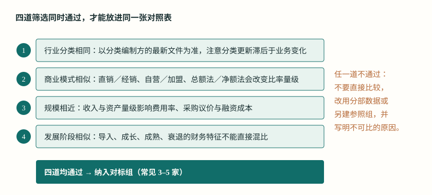
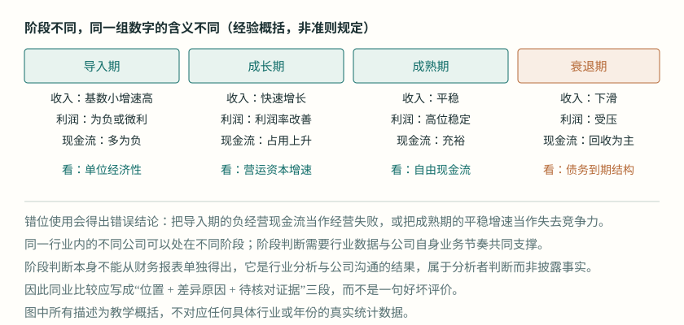

同业比较与行业分析
比率本身没有好坏，只有在同一组可比公司里才有位置。本章先解决“和谁比”，再解决“怎么比”，最后说明为什么口径差异会让同业比较得出错误结论。
同一个毛利率，不同的行业
假设有一家公司毛利率 20%。不看行业，这个数字无法评价。下表是教学示意的行业中位数（不是任何统计数据库的真实值，仅用于演示“位置”的含义）：
| 行业（教学示意） | 毛利率中位数（示意） | 该 20% 公司的位置 | 下一步应检查什么 |
|---|---|---|---|
| 软件与服务 | 70% | 明显偏低 | 是否存在大量外包成本、低毛利集成业务占比高 |
| 品牌消费品 | 45% | 偏低 | 品牌溢价能力、渠道结构与促销政策 |
| 连锁零售 | 22% | 接近中位数 | 库存周转与门店坪效，而非毛利水平 |
| 大宗贸易 | 3% | 明显偏高 | 收入确认是总额法还是净额法，是否混合了其他业务 |
同一个 20% 在一行里是缺点、在另一行里是亮点。这说明比率的“好”与“坏”是相对的：先确定参照组，再讨论水平。参照组选错了，后面的标准化、排名、综合得分全部失去意义。
选对可比公司
同业比较的第一道工作不是算比率，而是确认参照组能不能比。四道筛选条件缺一不可：

- 行业分类相同：证监会行业分类、申万行业分类都是第三方编制约定，不是会计准则，且更新往往滞后于业务变化。多元化集团应按分部或业务单元分别比较。
- 商业模式相似：直销与经销、自营与加盟、总额法与净额法，都会让收入、毛利、周转率的量级完全不同。
- 规模相近：规模差异会系统性影响费用率、采购议价与融资成本。
- 发展阶段相似：导入期、成长期、成熟期、衰退期的财务特征不同，直接比较会把阶段差异误认为能力差异。
实务上常见做法是选 3–5 家：1–2 家行业领先者用来看上限，2–3 家体量相近者用来定位。样本过小时，中位数与均值都不稳定，此时应在报告中写明“样本量少，仅作参考”。
中位数与分位数对标
确定参照组后，第二步是选基准值。三种常用做法：
- 中位数：受极端值影响小于算术平均数，适合样本小、含异常公司的情形；但样本小于 5 家时它只反映中间两家之间的位置，稳定性有限。
- 分位数：把参照组按指标排序，取 25%、50%、75% 分位点，把目标公司定位在四个区间之一。它不把差异压缩成一个总分，保留的信息更多。
- 标准化打分：把每个指标换成标准分后再加权求和，便于得到排名，但它对样本分布与权重选择都敏感。
这个公式有三个前设：样本量足够大、分布近似对称、且各指标方向已统一（比率越高越好还是越低越好）。小样本下标准差本身不稳定，极端值会把 z 分数拉得很远，因此用 5 家公司算出的“排名第一”不应被当作统计结论。
方向不统一是最常见的错误：资产负债率、存货周转天数、三项费用率都是“越低越好”，毛利率、ROE、CFO/净利润通常“越高越好”，利息保障倍数则要看行业。不先统一方向就直接加权求和，会把指标相互抵消。
行业生命周期与财务底色
行业所处阶段会系统性地影响财务特征。下表是经验概括，不是准则规定，也不意味着同行业内所有公司都处在同一阶段：

| 阶段 | 常见组合 | 不应单看什么 | 更适合看的指标 |
|---|---|---|---|
| 导入期 | 收入基数小且增速高，利润为负或微利，经营现金流多为负 | 净利润与当期现金流符号 | 单位经济性、客户获取成本、现金存在时长 |
| 成长期 | 收入快速增长，毛利率改善，营运资本占用上升 | 自由现金流是否为负 | 应收与存货增速是否快于收入、单位毛利 |
| 成熟期 | 增速平稳，利润与经营现金流稳定，资本开支以维持为主 | 收入增速的高低 | 自由现金流、分红与回购、存量客户留存 |
| 衰退期 | 收入下滑，毛利受压，现金回收成为主要任务 | 历史利润的惯性 | 应收回收、资产处置、债务到期结构 |
五力到财务变量
波特五力模型是行业结构分析框架，不是监管强制步骤；它的用途在于把“行业结构”翻译成可以去报表核对的具体变量：
- 供应商议价能力：向“毛利率与预付账款增速”传导。供应商集中度高时，毛利受压，预付款与备货可能上升。
- 买方议价能力：向“应收周转天数与合同资产”传导。客户集中、账期较长时，DSO 上升。
- 新进入者威胁：向“销售费用率与毛利率回归”传导。壁垒低时，高毛利会吸引投入，费用率上升。
- 替代品威胁：向“长期收入增速与研发投入”传导，短期报表上往往先体现在订单与新签订单结构上。
- 现有竞争强度：向“ROE 与销售费用率”传导。价格战期间，行业整体回报下降。
这五条都是倾向性预测而非决定性结论：同一结构下，拥有品牌、专利或网络效应的公司可以把压力转嫁给上下游，也可能因结构优势而长期维持高毛利。因此正确用法是先写下一个“若结构成立，应在报表里看到什么”，再去核对数字；如果数字相反，就先检查框架是否用错了。
同业对标工作台
把任意一个比率（毛利率、ROE、DSO 等）代入同一组可比公司，看看目标公司的位置。默认值为教学示意数据，可手工复算：排序后 18、20、22、25、30，中位数为 22，均值为 23。本工作台只做位置描述，不假定指标方向。
修改数据，即时复算
务必保证所有数值为同一指标、同一期间、同一口径；不一致的口径不能放在同一组里。
边界与自测
同业比较最容易出错的地方是“把位置当成结论”。如果一家公司在多项指标上明显优于参照组，它需要的不是兴奋而是换一个解释：先把口径差异、结构差异、分类差异逐项排除，再看是否还有剩余。下表把常见现象写成四列：
| 观察到的现象 | 可能的含义 | 反例或替代解释 | 需核对的证据 |
|---|---|---|---|
| 多项指标同时优于参照组 | 竞争地位或运营效率确实更好 | 口径不同：总额法与净额法、分部划分、汇率折算 | 收入确认政策、分部报告、合并范围变更 |
| 毛利率远高于同业 | 品牌、专利或结构优势 | 成本归集差异，或二者业务组合不同 | 成本构成、产品结构、单位售价 |
| 应收周转天数明显优于同业 | 结算模式以现款为主 | 应收已出表、保理或票据背书；也可能是季节性 | 应收款项融资、附注明细、季度趋势 |
| 增速远高于行业 | 份额提升或新品带动 | 上期低基数、并购并表、口径变更 | 合并范围变更、可比口径披露 |
自测一：同业比较中指标全面领先，能否直接认定为财务造假？
不能。领先可能来自真实竞争优势、也可能来自口径差异；只有通过查账类证据（资金流水、客户核实、盘点）才能认定问题。分析者的产出是“列出一张需要与公司确认的差异清单”，而不是定罪。
自测二：行业分类与公司实际业务不符时怎么办？
不要因为分类存在就硬用。可以改用分部数据、按业务单元自建参照组，并在报告中写明分类来源与局限。
结论：同业比较的结果应该是一句话加一张表：“这家公司在哪些维度上位于参照组的什么位置，以及哪些位置差异是因为口径而不是能力”。
依据与边界
本页所有行业中位数、公司描述与对标数据均为教学示意，不是任何统计数据库或指数公司的真实取值，不对应任何实际上市公司，不构成投资建议。
行业分类指引由监管部门、交易所与指数公司分别编制，适用版本与更新时点需以编制方最新文件为准；本页提到的分类仅用于说明“参照组需要先确定”，不声称某一版本。生命周期的财务特征与五力传导均为经验概括，属于作者讲解，不是准则或监管规定。